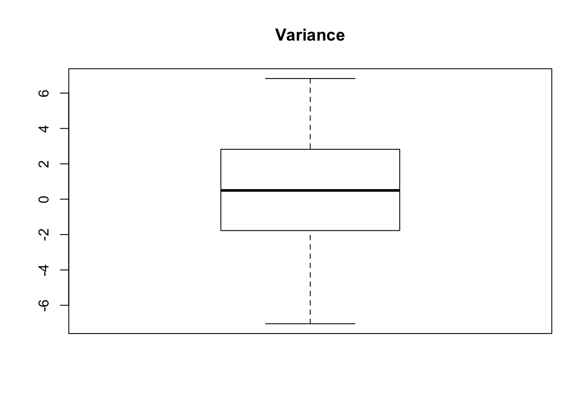
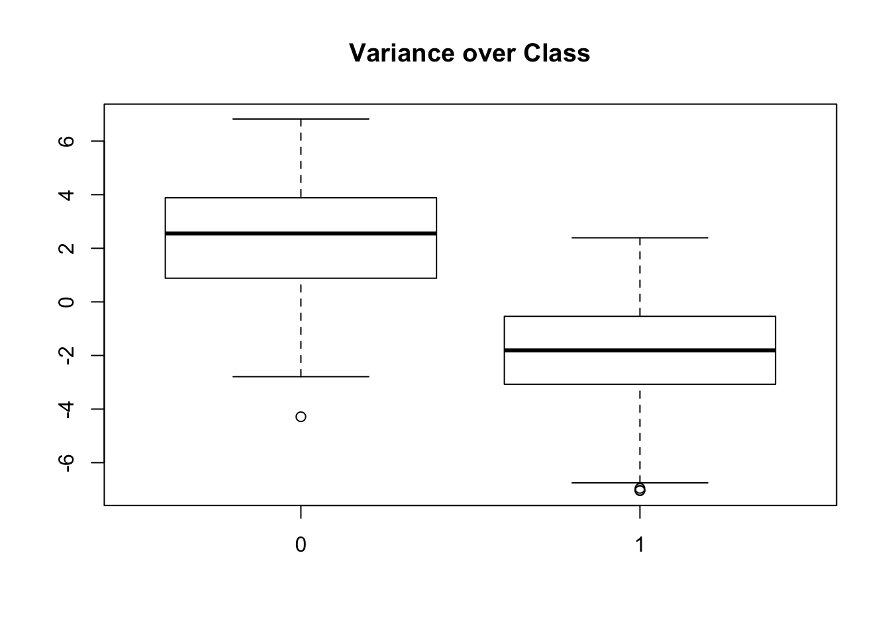
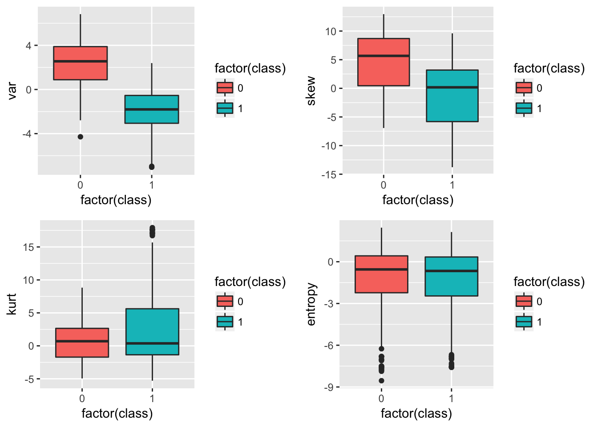
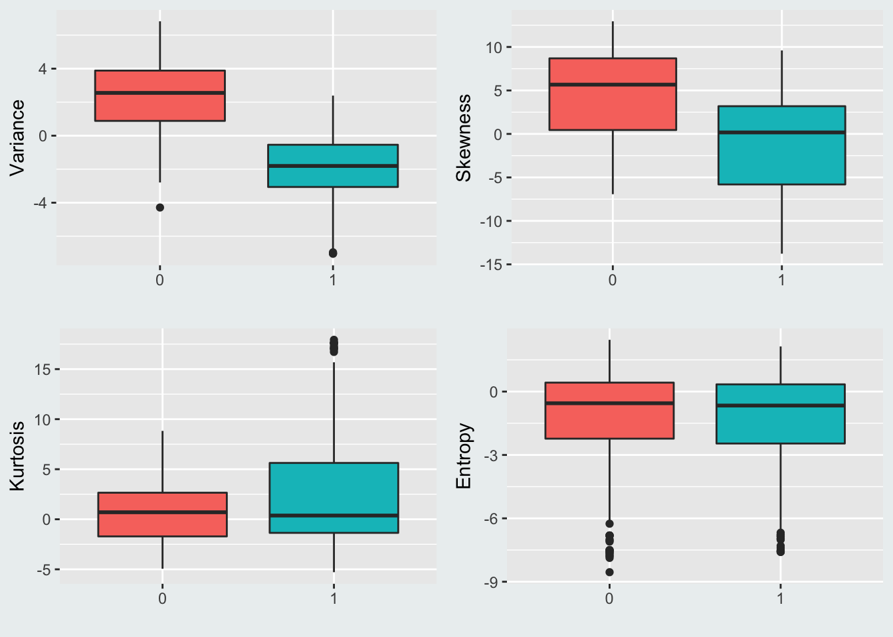
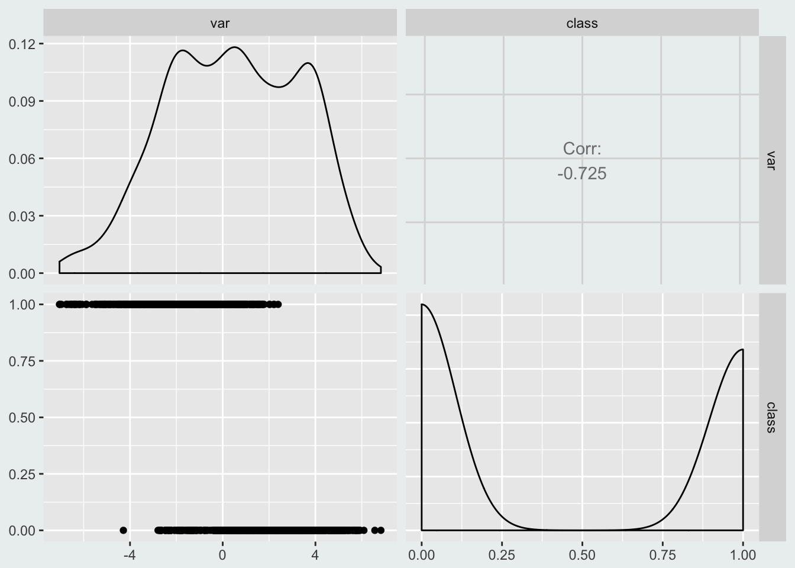
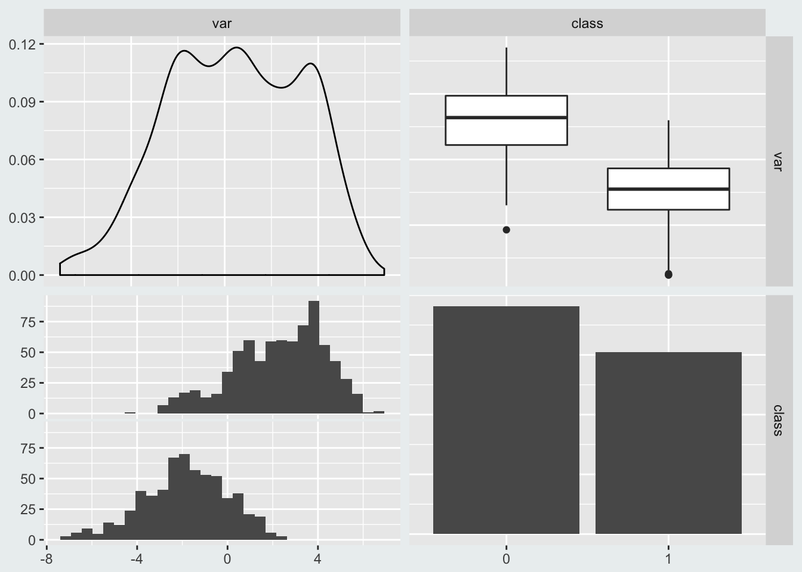
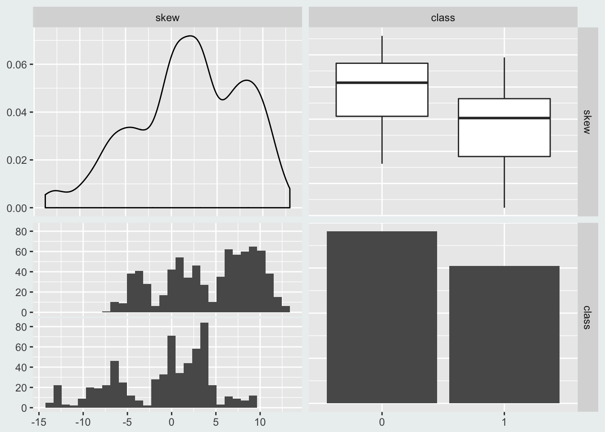
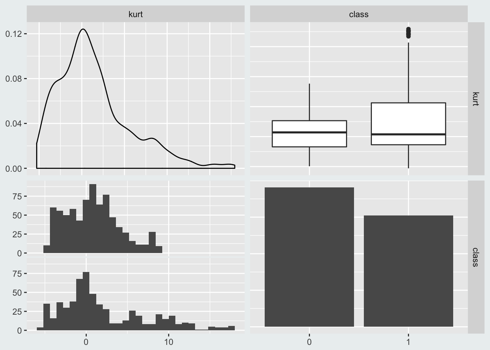
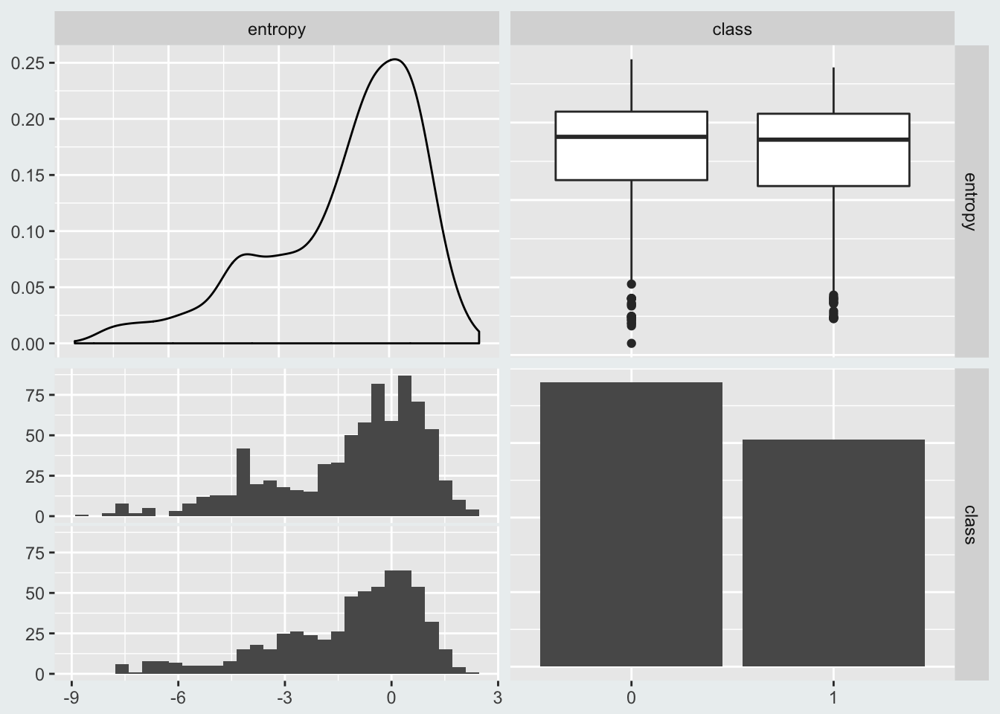
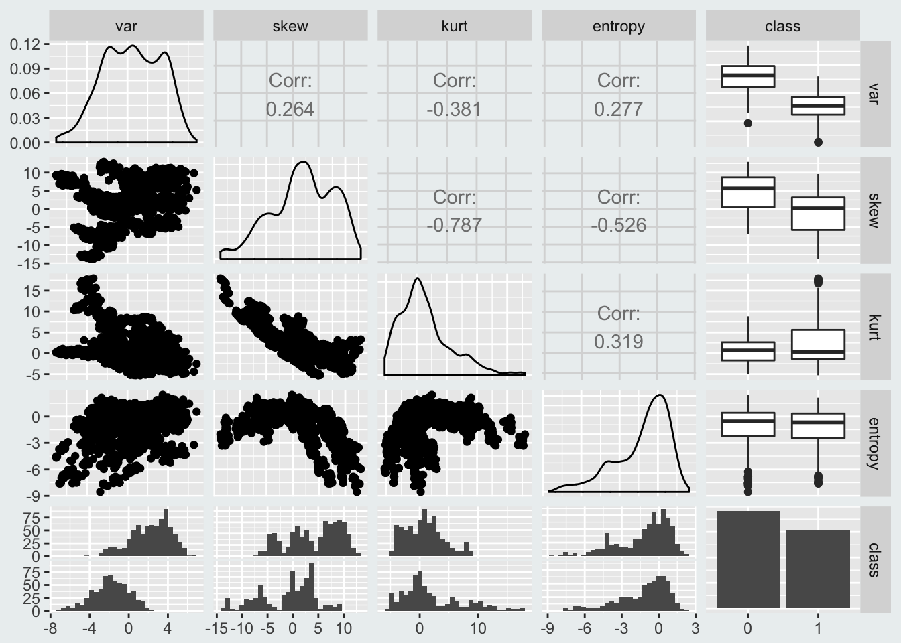

Quick visual analysis of data is an essential first step to familiarizing yourself with a dataset. In this note, we will explore rapid exploratory data analysis using some built-in R functions and the more powerful ggpairs tool.
We will be using the banknote authentication data from UCI machine learning repository. This dataset contains five variables: a binary class variable indicating if a banknote is fake or note and four variables of visual data from a scan of each banknote (variance, skew, kurtosis, and entropy). The nature of the data itself is not important for our purposes; we are merely interested in the distribution of the four continuous variables over the binary class variable. In a practical setting, the goal of this quick analysis would be to give us a hint as to which variables are most important to explaining the classification of each bank note.
In this first chunk, read in data, give each column a name, and present basic boxplots
library(GGally)
# name attributes
colnames(note) <- c("var","skew","kurt","entropy","class")
# basic boxplot of variance
boxplot(note$var, data=note, main="Variance", bg="blue")
# boxplot of variance distributed over each class
boxplot(var~class, data=note, main="Variance over Class")
While this graph certainly gets the job done, it is not aesthetically pleasing. For better looking graphs, let use ggplot2. We would also like to see each variable distributed over class. So to present the graphs side by side, we will use the grid.arrage function from gridExtra package.
# load libraries
library(ggplot2)
library(gridExtra)
# boxplots
box_var<-ggplot(note, aes(factor(class),var))+geom_boxplot(aes(fill=factor(class)))
box_skew<-ggplot(note, aes(factor(class),skew))+geom_boxplot(aes(fill=factor(class)))
box_kurt<-ggplot(note, aes(factor(class),kurt))+geom_boxplot(aes(fill=factor(class)))
box_entropy<-ggplot(note, aes(factor(class),entropy))+geom_boxplot(aes(fill=factor(class)))
# arrange in a 2x2 grid
grid.arrange(box_var, box_skew, box_kurt, box_entropy, ncol=2, nrow=2)
This looks much better and we can quickly see that the variable var provides the most variation over the two classes. For even better looking plots we can change the labeling:
# boxplots
box_var<-ggplot(note, aes(factor(class),var))+geom_boxplot(aes(fill=factor(class)))+ labs(x="",y="Variance") + theme(legend.position="none")+theme(plot.background = element_rect(fill = '#ECF0F1', colour = '#ECF0F1'))
box_skew<-ggplot(note, aes(factor(class),skew))+geom_boxplot(aes(fill=factor(class)))+ labs(x="",y="Skewness") + theme(legend.position="none")+theme(plot.background = element_rect(fill = '#ECF0F1', colour = '#ECF0F1'))
box_kurt<-ggplot(note, aes(factor(class),kurt))+geom_boxplot(aes(fill=factor(class)))+ labs(x="",y="Kurtosis") + theme(legend.position="none")+theme(plot.background = element_rect(fill = '#ECF0F1', colour = '#ECF0F1'))
box_entropy<-ggplot(note, aes(factor(class),entropy))+geom_boxplot(aes(fill=factor(class)))+ labs(x="",y="Entropy") + theme(legend.position="none")+theme(plot.background = element_rect(fill = '#ECF0F1', colour = '#ECF0F1'))
# arrange in a 2x2 grid
grid.arrange(box_var, box_skew, box_kurt, box_entropy, ncol=2, nrow=2)
This looks good, however, but not super great. The code is repetitive and the layout is not really that pleasing. We could try to add a shared legend, play with the labeling some more, and try to bum some code. Or we could just use ggpair:
# set color theme so we don't have to repeat the theme background color code so much
theme_set(theme_grey()+theme(legend.position="none")+theme(plot.background = element_rect(fill = '#ECF0F1', colour = '#ECF0F1')))
# variance of class
ggpairs(data=note, columns=c(1,5))
This above chart is nice diagnostic of each variable by itself and of their relationship to each other. You’ll notice, however, that it is treating class as a continuous variable when really it should be a factor (we manually specified this in the ggplot code above). Lets convert to a factor and then try again for each variable.
# convert class to a factor
note$class <- as.factor(note$class)
# ggpairs
ggpairs(data=note, columns=c(1,5))
ggpairs(data=note, columns=c(2,5))
ggpairs(data=note, columns=c(3,5))
ggpairs(data=note, columns=c(4,5))
Now this looks great. Not only do we have the boxplots from above, but we also get to see the distributions of each variable by itself. And finally, if want to see ggpairs for all combinations of data, we just simply call it over the entire dataframe.
# combine all into one ggpairs call
ggpairs(data=note, columns=c(1:5))